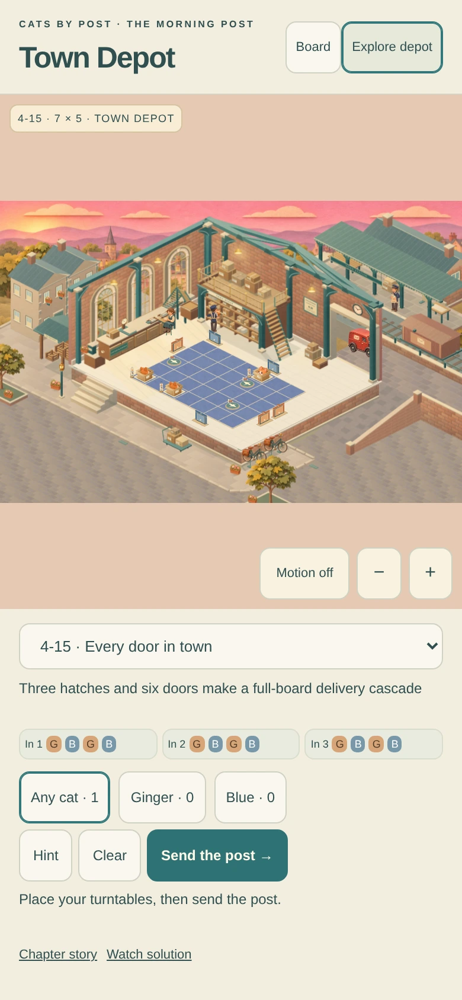
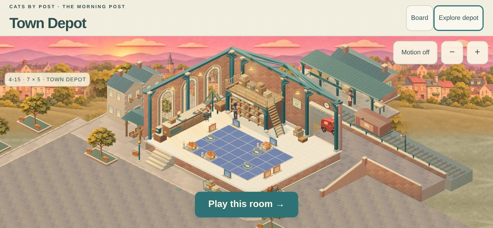
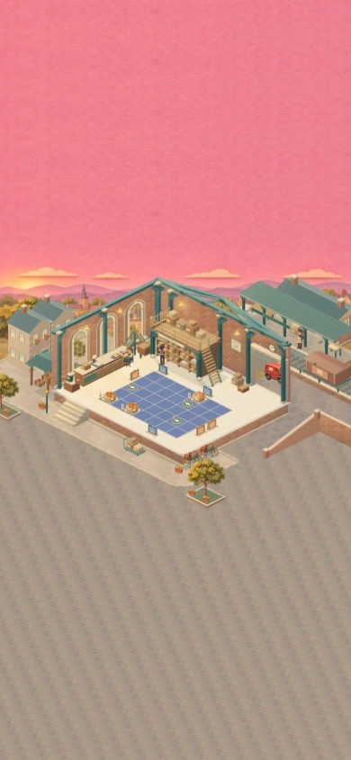
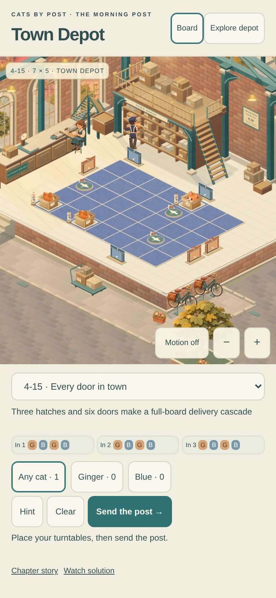
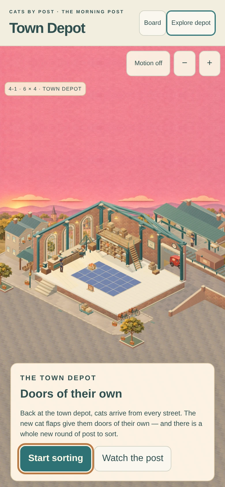
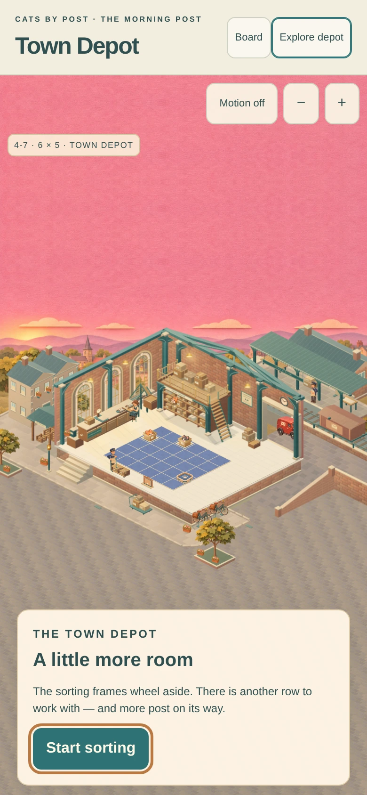
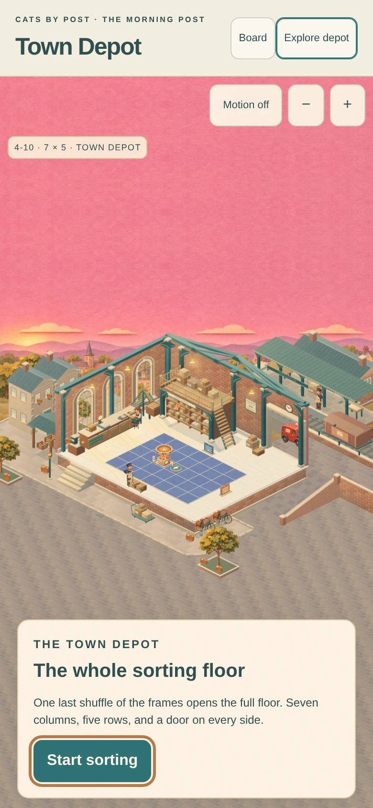
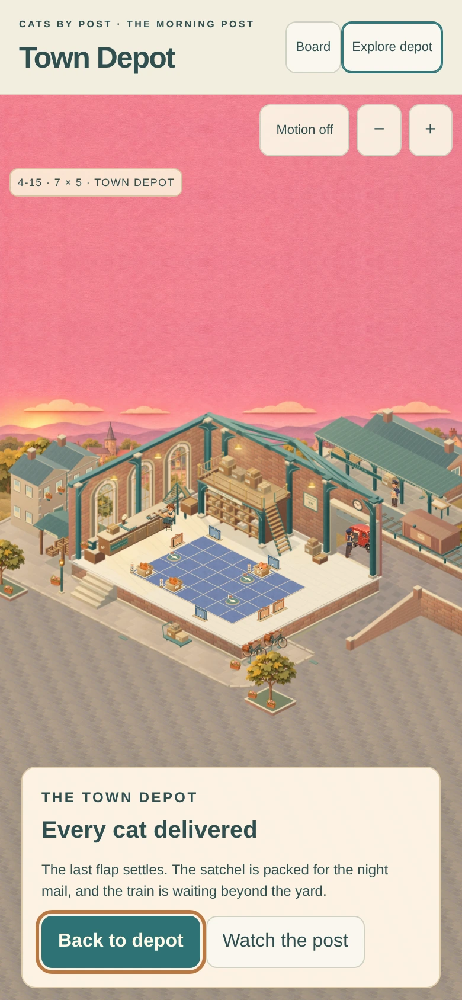

CATS BY POST · TOWN DEPOT
More room for the morning
Explore now uses the available height. The sky and street continue beyond the hall’s framing, with the room kept at its existing scale. The left forecourt has a connected pavement and planted edge.

Before · 434px of scene height in a 390×844 viewport. Now · 764px of scene height, with a return to the board.
Now · 764px of scene height, with a return to the board.The wider view

Actual landscape capture after the left-hand correction. The existing frontage, station and board retain their geometry.
Space supplied by the game
The full-game interface supplies its own viewport. These two renderer captures have the same width and room scale, with different heights; they contain no study controls.

390×844 host. 390×1100 host · more sky and foreground.
390×1100 host · more sky and foreground.All 25 existing deliveries remain playable, including the 7×5 maximum. Gameplay, timing and saves are preserved. The study’s controls are separate from the production interface.
Board and chapter captures

Return to Board.
Chapter introduction.
First growth.
Second growth.
The morning post ending.Verification and integration notes
Actual Chromium captures and automated checks are provided here. Physical iPhone Safari remains a manual check.
Handover · Integration notes · Review and corrections · Delivery and viewport checks · Review regressions · Preserved source inputs · Test results · Measured software drawing cost · Packet hashes